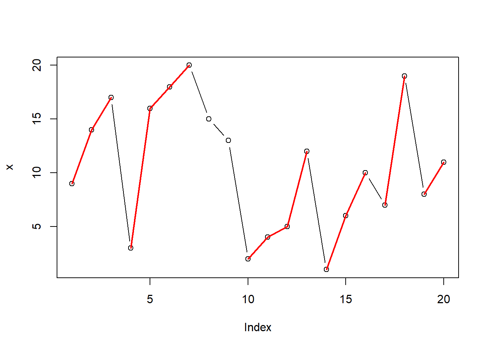
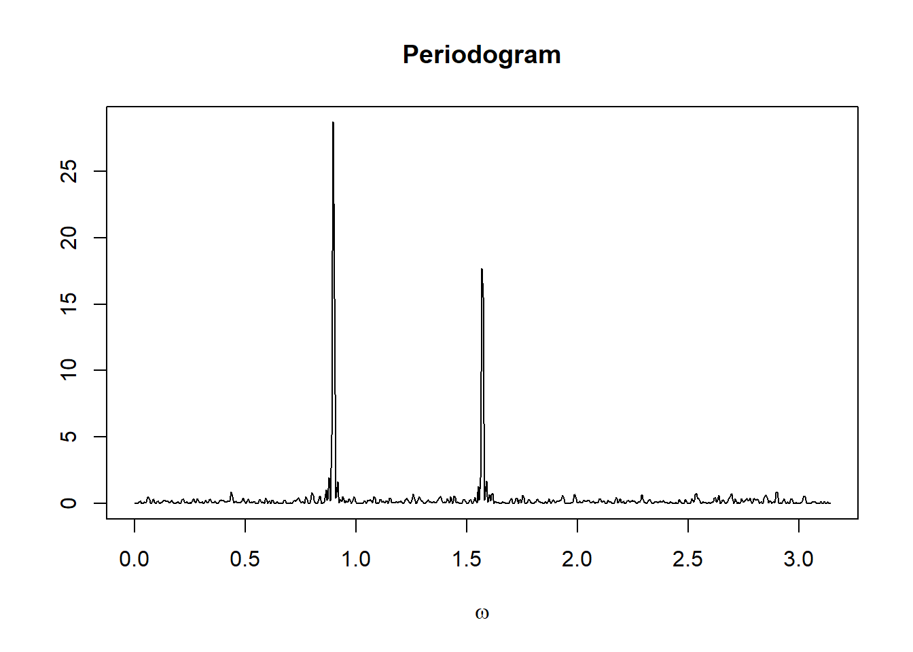

43 R编程例子
因为这些例子要用作学生习题， 所以这里只有问题， 没有实际内容。
43.1 R语言
43.1.1 用向量作逆变换
设向量x长度为n,
其中保存了1到n的正整数的一个排列。
把x看成是在集合\(\{1,2,\dots,n \}\)上的一个一一变换，
求向量y使得y能够表示上述变换的逆变换。
即任给长度为\(n\)的向量z, z[x]表示按照x的次序重新排列z的元素，
而z[x][y]则应该恢复为z。
43.1.2 斐波那契数列计算
设数列\(x_0=0, x_1=1\)， 后续值按如下公式递推计算： \[ x_n = x_{n-2} + x_{n-1}, \ n=2,3,\dots \] 这样的数列叫做斐波那契数列。 希望编写R函数， 输入\(n\)，返回计算的\(x_n\)的值。
43.1.3 穷举所有排列
设向量x的各个元素为某个集合的元素。
想要列出x的元素的所有不同排列。
比如，如果x = 1:3,
所有排列为
1 2 3
1 3 2
2 1 3
2 3 1
3 1 2
3 2 1共\(3!=6\)种不同的排列。
43.1.4 可重复分组方式穷举
设有\(n\)个编号卡片， 分别有号码\(1, 2, \dots, n\)。 从中有放回地抽取\(m\)个并记录每次的号码， 穷举\(m\)个号码中多少个1，多少个2，\(\dots\), 多少个\(n\)这样的结果。
例如，有3个编号卡片， 随机有放回第抽取2次。 用\((x_1, x_2, x_3)\)表示每一种个数组合， \(x_1\)表示2次抽取中号码1的个数， \(x_2\)表示2次抽取中号码2的个数， \(x_3\)表示2次抽取中号码3的个数。 问题就是列出\((x_1, x_2, x_3)\)的所有不同值。
43.1.5 升降连计数
考虑如下的数据：
## [1] 9 14 17 3 16 18 20 15 13 2 4 5 12 1 6 10 7 19 8 11x的序列中连续上升的一段(至少两个)称为一个升连， 对升连的个数计数：
9 14 17 (1) 3 16 18 20 (2) 2 4 5 12 (3)
1 6 10 (4) 7 19 (5) 8 11 (6)共6段。 这可以用绘图更形象地表现：
plot(x, type="b", lwd=1)
segs <- matrix(c(
1,3, 4,7, 10,13, 14,16, 17,18, 19,20),
ncol=2, byrow=TRUE)
for(i in seq(nrow(segs))) {
lines(seq(segs[i,1], segs[i,2]),
x[seq(segs[i,1], segs[i,2])],
col="red", lwd=2)
}
如何用编程方式找到段数？
最后的程序需要能解决如下问题：
升连个数=？
43.2 概率
43.2.1 智者千虑必有一失
成语说：“智者千虑，必有一失；愚者千虑，必有一得”。 设智者作判断的准确率为\(p_1 = 0.99\), 愚者作判断的准确率为\(p_2=0.01\)， 计算智者做1000次独立的判断至少犯一次错误的概率， 与愚者做1000次独立判断至少对一次的概率。
43.2.2 圆桌夫妇座位问题
在一张圆桌上用餐时， \(n\)对夫妇随机入座。 计算没有任何一位妻子和她的丈夫相邻的概率。 通过推导可得此概率为 \[ p_n = 1 + \sum_{k=1}^{n} (-1)^k C_{n}^k \frac{(2n-k-1)! 2^k}{(2n-1)!}. \qquad(1) \] 例如\(p_2 = 1/3\), \(p_3 = 4/15 = 0.2667\), \(p_4 = 0.2952\), \(p_5 = 0.3101\)。
分别用上面的理论公式以及直接穷举验证的方法， 对\(n=2, 3, 4, 5\)的情形进行验证。
43.3 科学计算
43.3.1 城市间最短路径
假设有\(n\)个城市，编号为\(1,2,\dots,n\)。 已知其中的部分城市之间有高速公路连通， 每对连通城市记为\((F_i, T_i)\), 其中\(F_i, T_i \in \{1,2,\dots,n \}\)且\(F_i < T_i\), \(i=1,2,\dots,m\)。 除了这些直接连通的城市以外， 其它的任意两个城市只能途经别的城市连通， 或者根本不能靠高速公路连通。 用一个\(m\times 2\)的R矩阵\(M\)可以输入这些连通情况， 矩阵的每行是一对\((F_i, T_i)\)值。
要求编写一个R函数， 输入直接连通情况\(M\)后， 输出一个\(n \times n\)矩阵\(R\), R[i,i]=0, R[i,j]=1表示直接相连， R[i,j]=\(k\) (\(k \geq 2\))表示城市i与城市j至少需要经过\(k\)段高速公路连通， R[i,j]=Inf表示城市i与城市j不能靠高速公路连通。 \(R\)的元素值仅考虑途经的高速公路段数而不考虑具体里程。 如果从一个城市通过高速公路移动到直接相连城市叫做移动一步， \(R\)的\((i,j)\)元素是从第\(i\)城市通过高速公路到第\(j\)城市需要移动的步数。
这个问题也可以作为“相识”问题的模型。 设\(n\)个人中有些人是直接相识的， 如果两个不相识的人想认识， 假设必须经过相识的人引荐， 问最少需要多少个引荐人。
本问题必须使用循环， 很难向量化，属于R比较不擅长的问题。 可以考虑使用Rcpp把程序用C++语言实现， 可以大大加速。 当然， 如果这个程序仅需要执行不多的次数， 用R就足够了。
43.3.2 Daubechies小波函数计算
这个例子主要展示了不用每次计算函数值而是尽可能从已经计算并储存的函数值中查找的技巧。 程序中用了比较多的循环， 如果有需要， 可考虑用Rcpp转换成C++代码以提高效率。
小波是重要数学工具, 在图像处理、信号处理等方面有广泛应用。 小波中一个重要的函数叫做尺度函数(scale function), 它满足所谓双尺度方程： \[ \phi (x) = \sqrt{2} \sum_k {h_k \phi (2x - k)} \]
一种特殊的尺度函数是只在有限区间上非零的, 叫做紧支集的。 紧支集尺度函数可以在给定\(\{h_k\}\)后用以下迭代公式生成： \[ \begin{aligned} \eta _0 (x) =& I_{[ - 0.5,0.5]} (x) \\ \eta _{n + 1} (x) =& \sqrt 2 \sum\limits_{k = 0}^{2N - 1} {h_k \eta _n (2x - k)} \end{aligned} \] 其中\(N\)是正整数, \(N\)=2时\(h_0\)=0.482962913145, \(h_1\)=0.836516303738, \(h_2\)=0.224143868042, \(h_3=-0.129409522551\)。 已知\(\phi(x)\)的支集(不为零的区间)为\([0,2N-1]\), \(\eta_n(x)\)的支集包含于\([-0.5, 2N-1]\)中。
任务： 编写计算\(\phi(x)\)的R程序， 通过20次迭代计算， 输出\(\phi(x)\)在\([0,2N-1]\)区间的256个等间隔点上的函数值并作图。 在迭代过程中， 应不重新结算函数格子点的值，仅计算新加入的格子点的值。 不要利用递归函数， 递归函数需要每次重新计算已经计算过的函数值。
43.3.3 房间加热温度变化
某个房屋带有天花板，天花板与屋顶之间有一定的空间。 用壁炉保持房间温度。 为了研究房间内与天花板上方的温度变化， 建立了如下的微分方程组： \[ \begin{aligned} \frac{d x_1}{dt} =& 0.35 \left( -9.7 \sin \frac{(t+3)\pi}{12} + 8.3 - x_1(t) \right) + 0.46( x_2(t) - x_1(t) ) + 11.1 \\ \frac{d x_2}{dt} =& 0.28 \left( -9.7 \sin \frac{(t+3)\pi}{12} + 8.3 - x_2(t) \right) + 0.46( x_1(t) - x_2(t) ) \end{aligned} \] 其中\(x_1(t)\)是房间在\(t\)时刻的温度（单位：摄氏度）， \(x_2(t)\)是天花板上方在\(t\)时刻的温度， \(t\)是单位为小时的时间。
设\(t=0\)时\(x_1(t)=x_2(t)=4\)， 用每一秒钟重新计算的方法计算24小时内的房间温度与天花板上温度， 绘图。 计算7天的温度， 查看周期性。 当温度循环变化差距小于0.05度时认为开始周期变化了。
43.4 统计计算
43.4.1 核回归与核密度估计
考虑核回归问题。核回归是非参数回归的一种, 假设变量\(Y\)与变量\(X\)之间的关系为： \[ Y = f(X) + \varepsilon \] 其中函数\(f\)未知。 观测到X和Y的一组样本\(X_i, Y_i\), \(i\)=1,…,\(n\)后, 对\(f\)的一种估计为： \[ \hat f(x) = \frac{\sum\limits_{i = 1}^n {K\left( {\frac{{x - X_i }}{h}} \right)Y_i } } {\sum\limits_{i = 1}^n {K\left( {\frac{{x - X_i }}{h}} \right)} } \] 其中\(h>0\)称为窗宽， 窗宽越大， 得到的密度估计越平滑。 \(K\)叫做核函数, 一般是一个非负的偶函数, 原点处的函数值最大, 在两侧迅速趋于零。 例如正态密度函数, 或所谓双三次函数核： \[ K(x) = \left\{ {\begin{array}{*{20}c} {\left( {1 - \left| x \right|^3 } \right)^3 } & {\left| x \right| \leq 1} \\ 0 & \mbox{其它} \\ \end{array}} \right. \]
与核回归类似，可以用核平滑方法估计总体分布密度。 设样本为\(Y_1, Y_2, \dots, Y_n\), 密度估计公式为 \[ \hat f(x) = \frac{1}{n} \sum\limits_{i = 1}^n \frac{1}{h} {K\left( {\frac{{x - Y_i }}{h}} \right) } \] 其中\(K(x)\)满足\(\int_{-\infty}^\infty K(x) \,dx = 1\)。 \(h\)是窗宽，窗宽越大， 估计的曲线越光滑。 \(h\)的一种建议公式为\(h = 1.06 S n^{-1/5}\), \(S\)为样本标准差。
对以上两个问题进行编程，其中窗宽\(h\)由用户输入。
43.4.2 二维随机模拟积分
设二元函数\(f(x,y)\)定义如下 \[ \begin{aligned} & f(x,y) \\ =& \exp\left\{ -45(x + 0.4)^2 - 60(y-0.5)^2 \right\} \\ & + 0.5 \exp\left\{ -90(x-0.5)^2 - 45(y+0.1)^4 \right\} \end{aligned} \] (注意其中有一个4次方。) 求如下二重定积分 \[ I = \int_{-1}^1 \int_{-1}^1 f(x,y) \,dx\,dy \] \(f(x,y)\)有两个分别以\((-0.4, 0.5)\)和\((0.5, -0.1)\)为中心的峰， 对积分有贡献的区域主要集中在\((-0.4,0.5)\)和\((0.5, -0.1)\)附近， 在其他地方函数值很小，对积分贡献很小。 可以用随机模拟方法估计\(I\)的值。
第一种估计方法是平均值法。 设\(X_i, i=1,2,\dots, N\)是均匀分布\(U(-1,1)\)的随机数， \(Y_i, i=1,2,\dots, N\)也是均匀分布\(U(-1,1)\)的随机数， 两者独立，可估计\(I\)为 \[ \hat I_1 = \frac{4}{N} \sum_{i=1}^N f(X_i, Y_i). \]
第二种估计方法是重要抽样法。 设正态分布\(\text{N}(\mu, \sigma^2)\)的密度记为\(p(x; \mu, \sigma^2)\)， 令 \[ \begin{aligned} & g(x,y) \\ =& 0.5358984 p(x;-0.4,90^{-1}) p(y;0.5,120^{-1}) \\ & + 0.4641016 p(x;0.5,180^{-1}) p(y;-0.1,20^{-1}), \\ & -\infty < x < \infty, -\infty < y < \infty, \end{aligned} \] 这是一个二元随机向量的密度， 是两个二元正态密度的混合分布。 设\(K_i, i=1,2,\dots,N\)是取值于\(\{1,2\}\)的随机数， \(P(K_i = 1) = 0.5358984\), \(P(K_i = 2) = 1 - P(K_i = 1)\)。 当\(K_i=1\)时，取\(X_i\)为N(\(-0.4,90^{-1}\))随机数， \(Y_i\)为N(\(0.5,120^{-1}\))随机数； 当\(K_i=2\)时，取\(X_i\)为N(\(0.5,180^{-1}\))随机数， \(Y_i\)为N(\(-0.1,20^{-1}\))随机数， 这样得到的\((X_i, Y_i), i=1,2,\dots,N\)是\(g(x,y)\)的随机数。 令 \[ \hat I_2 = \frac{1}{N} \sum_{i=1}^n \frac{f(X_i, Y_i)}{g(X_i, Y_i)}, \] 称为\(I\)的重要抽样法估计。
43.4.2.1 编程任务
编写R函数估计计算\(\hat I_1\)。 重复模拟\(B=100\)次， 得到\(\hat I_1\)的\(B\)个值， 计算这些值的平均值和标准差。
编写R函数估计计算\(\hat I_2\)。 重复模拟\(B=100\)次， 得到\(\hat I_2\)的\(B\)个值， 计算这些值的平均值和标准差。
比较模拟得到的平均值和标准差， 验证两者是否基本一致， 通过标准差大小比较两种方法的精度。
注意尽量用向量化编程。
43.4.3 潜周期估计
设时间序列\(\{ y_t \}\)有如下模型: \[ y_t = \sum_{k=1}^m A_k \cos(\lambda_k t + \phi_k) + x_t, \ t=1,2,\dots \] 其中\(x_t\)为线性平稳时间序列， \(\lambda_k \in (0,\pi)\), \(k=1,2,\dots,m\)。 这样的模型称为潜周期模型。 如果有\(\{ y_t \}\)的一组样本\(y_1, y_2, \dots, y_n\), 可以定义周期图函数 \[ P(\omega) = \frac{1}{2\pi n} \left| \sum_{t=1}^n y_t e^{-it\omega} \right|^2, \ \omega \in [0, \pi]. \] 这里\(\omega\)是角频率。 对于潜周期数据， 在\(\lambda_j\)的对应位置\(P(\omega)\)会有尖峰， 而且当\(n\to\infty\)时尖峰高度趋于无穷。 下面是一个样例图形。

如下算法可以在\(n\)较大时估计\(m\)和\(\{\lambda_k \}\)： 首先，对\(\omega_j=\pi j / n\), \(j=1,2,\dots,n\)计算\(h_j = P(\omega_j)\)， 求\(\{ h_j, j=1,2,\dots, n \}\)的3/4分位数记为\(q\)。 令\(C = q n^{0.25}\)，以\(C\)作为分界线， 设\(\{ h_j \}\)中大于\(C\)的下标\(j\)的集合为\(J\), 当\(J\)非空时，把\(J\)中相邻点分入一组， 但是当两个下标的差大于等于\(n^{0.6}\)时就把后一个点归入新的一组。 在每组中，以该组的\(h_j\)的最大值点对应的角频率\(j \pi / n\)作为潜频率\(\{ \lambda_k \}\)中的一个的估计。
用如下R程序可以模拟生成一组\(\{ y_t \}\)的观测数据:
编写R程序:
编写计算\(P(\omega)\)的函数， 输入\(\boldsymbol y = (y_1, y_2, \dots, y_n)^T\) 和\(\boldsymbol\omega = (\omega_1, \omega_2, \dots, \omega_s)^T\), 输出\((P(\omega_1), P(\omega_2), \dots, P(\omega_s))\)。
对输入的时间序列样本\(y_1, y_2, \dots, y_n\)， 编写函数用以上描述的算法估计\(m\)和\(\{ \lambda_j, j=1,2,\dots,m \}\)。
用上述模拟数据测试编写的算法程序。
进一步地，用R函数
fft()计算\(h_j=P(\pi j / n), j=1,2,\dots,n\)。把整个算法用Rcpp和C++程序实现。
43.4.4 ARMA(1,1)模型估计
考虑如下的零均值高斯ARMA(1,1)模型：
\[ X_t = a X_{t-1} + e_t + b e_{t-1}, t=1,2,\dots,T \] 其中\(0 < |a| < 1\), \(0 < |b| < 1\)， \(-a \neq b\), \(\{ e_t \}\)独立同N(\(0, \sigma_e^2\))分布。
- 给定观测\(x_1, x_2, \dots, x_T\)， 写出在\(x_0=0\)且\(e_0 = 0\)条件下的条件对数似然函数。
- 编写R程序，
用条件最大似然估计方法估计参数\(a, b, \sigma_e^2\)。
可使用数值优化程序如
nlm()或optim()。 - 对\(a=0.5\), \(b=0.7\), \(\sigma_e=1\)，
\(T=100\), 模拟生成\(x_t\)的样本并重复模拟\(B=1000\)次，
据此评估\(\hat a, \hat b, \hat\sigma_e\)的估计精度。
模拟可使用R的
arima.sim()函数。
若\(x_0, e_0\)已知，从\(x_1, \dots, x_T\)可递推地计算 \[ e_t = x_t - a x_{t-1} - b e_{t-1}, \ t=1,2,\dots, T \] 记\(\boldsymbol{\theta} = (a, b, \sigma_e, x_0, e_0)^T\)， 有\(X_t | x_{t-1}, \dots, x_1, \boldsymbol{\theta}\)服从 N(\(a x_{t-1} + b e_{t-1}, \sigma_e^2\))条件分布。 于是用联合密度的乘积公式可得 \[\begin{aligned} f(x_1, \dots, x_T | \boldsymbol{\theta}) =& f(x_1 | \boldsymbol{\theta}) f(x_2 | x_1, \boldsymbol{\theta}) \dots f(x_T | X_{T-1}, \dots, x_1, \boldsymbol{\theta}) \\ =& \prod_{t=1}^T \text{dnorm}(x_t, a x_{t-1} + b e_{t-1}, \sigma_e) \\ =& \prod_{t=1}^T (2\pi)^{-1/2} \sigma_e^{-1} \exp\left\{ -\frac12 \frac{1}{\sigma_e^2} (x_t - a x_{t-1} - b e_{t-1})^2 \right\} \\ =& (2\pi)^{-T/2} \sigma_e^{-T} \exp\left\{ -\frac12 \frac{1}{\sigma_e^2} \sum_{t=1}^T e_t^2 \right\} \end{aligned}\] 其中\(\text{dnorm}(x, \mu, \sigma)\)表示N(\(\mu, \sigma^2\))的分布密度。
取\(x_0=0, e_0=0\)，给定\(a, b\)后递推计算\(\{ e_t \}\)序列， 对数似然函数为 \[ l(a, b, \sigma_e) = -T \ln\sigma_e - \frac12 \frac{1}{\sigma_e^2} \sum_{t=1}^T e_t^2 \] 注意其中的\(\{e_t \}\)也与待估参数\(a, b\)有关。
可以用数值优化算法估计求如上的问题的最大值点。 显然\(a, b\)的最大值点不依赖于\(\sigma_e\)的取值， 所以可以先求\(\sum_{t=1}^T e_t^2\)的最小值点。 这基本是一个最小二乘估计问题， 但是\(e_{t-1}\)也依赖于\(a, b\)的值所以不能直接用线性最小二乘求解。
43.4.5 VAR模型平稳性
称\(k\)元时间序列\(\boldsymbol r_t\)服从一个VAR(\(p\))模型， 如果 \[\begin{align} \boldsymbol r_t = \boldsymbol\phi_0 + \boldsymbol\Phi_1 \boldsymbol r_{t-1} + \dots + \boldsymbol\Phi_p \boldsymbol r_{t-p} + \boldsymbol a_t \tag{43.1} \end{align}\] 其中\(\boldsymbol\phi_0\)和\(\{ \boldsymbol a_t \}\)同VAR(1)的规定， \(\boldsymbol\Phi_j\)是\(k\)阶方阵（\(k=1,2,\dots,p\)）。 利用向后推移算子（滞后算子）\(B\)可以将模型写成 \[\begin{aligned} (\boldsymbol I - \boldsymbol\Phi_1 B - \dots - \boldsymbol\Phi_p B^p) \boldsymbol r_t = \boldsymbol\phi_0 + \boldsymbol a_t \end{aligned}\] 记 \[\begin{align} P(z) = \boldsymbol I - \boldsymbol\Phi_1 z - \dots - \boldsymbol\Phi_p z^p \tag{43.2} \end{align}\] 这是一个从复数\(z\)到\(k\)阶方阵\(P(z)\)的变换， \(P(z)\)的每个元素是关于\(z\)的阶数不超过\(p\)的多项式。 称一元多项式函数\(\text{det}(P(z))\)（或记为\(|P(z)|\)）为模型的（逆序）特征多项式。
如果\(|P(z)| \neq 0\), \(\forall |z| < 1\)（\(z\)为复数）， 则模型(43.1)是平稳的。
编写R函数，
输入三维（三个下标）的系数矩阵数组arrcoef,
返回特征多项式的所有复根。
arrcoef[,,1]保存\(\boldsymbol\Phi_1\),
arrcoef[,,2]保存\(\boldsymbol\Phi_2\),
等等。
作为例子， 考虑如下的三个模型，对每个计算特征多项式的复根并判断是否平稳：
\[\begin{aligned} \left(\begin{array}{c} r_{1t} \\ r_{2t} \end{array}\right) =& \left(\begin{array}{cc} 0.2 & 0.3 \\ -0.6 & 1.1 \end{array}\right) \left(\begin{array}{c} r_{1,t-1} \\ r_{2,t-1} \end{array}\right) + \left(\begin{array}{c} a_{1t} \\ a_{2t} \end{array}\right) \end{aligned}\]
\[\begin{aligned} \left(\begin{array}{c} x_{1t} \\ x_{2t} \end{array}\right) = \left(\begin{array}{cc} 0.5 & -1.0 \\ -0.25 & 0.5 \end{array}\right) \left(\begin{array}{c} x_{1,t-1} \\ x_{2,t-1} \end{array}\right) + \left(\begin{array}{c} a_{1t} \\ a_{2t} \end{array}\right) \end{aligned}\]
\[\begin{aligned} \boldsymbol r_t =& \left(\begin{array}{rrr} 0.39 & 0.10 & 0.05 \\ 0.35 & 0.34 & 0.47 \\ 0.49 & 0.24 & 0.24 \end{array}\right) \boldsymbol r_{t-1} + \left(\begin{array}{rrr} 0.06 & 0.11 & 0.02 \\ -0.19 & -0.18 & -0.01 \\ -0.31 & -0.13 & 0.09 \end{array}\right) \boldsymbol r_{t-2} + \boldsymbol a_t \end{aligned}\]
43.4.6 贮存可靠性评估
设某种设备的贮存寿命为随机变量\(X\), 服从指数分布Exp(\(\theta\)), \(E X = \theta > 0\)。 假设有\(n\)台此种设备分别在时间\(t_1, t_2, \dots, t_n\)进行了试验， 第\(i\)台试验成功用\(\delta_i=1\)表示， 试验失效用\(\delta_i=0\)表示。把\(n\)次试验的结果写成 \[ Z_n = \left(\begin{array}{cc} t_1 & \delta_1 \\ t_2 & \delta_2 \\ \vdots & \vdots \\ t_n & \delta_n \end{array}\right) \tag{1} \] 这里\(\delta_1, \delta_2, \dots, \delta_n\)认为是随机变量， \(t_1, t_2, \dots, t_n\)是固定的时间。 \(\delta_i\)服从两点分布\(\text{B}(1, \exp(-t_i / \theta))\)。 \(Z_n\)取某个特定组合的概率为 \[ P(Z_n) = \prod_{i=1}^n \left\{ \left[ \exp(-t_i / \theta) \right]^{\delta_i} \left[ 1 - \exp(-t_i / \theta) \right]^{1 - \delta_i} \right\}. \tag{2} \]
要利用观测数据\(Z_n\)估计\(\theta\)的置信度为\(1-\alpha\)的置信下限， 可以用陈家鼎《生存分析与可靠性》中的样本空间排序法。 注意到\(Z_n\)中每个\(\delta_i\)可以取1或0， 所以\(Z_n\)的所有不同取值共有\(2^n\)个， 记这些所有不同取值为\(\mathcal D\)， 在\(\mathcal D\)中定义如下的序： 设\(Z_n'\)与\(Z_n\)都是\(\mathcal D\)中的试验结果， 称\(Z_n'\)不次于\(Z_n\), 并记作\(Z_n' \gtrsim Z_n\)， 如果如下两个条件之一成立：
- \(\sum_{i=1}^n \delta_i' > \sum_{i=1}^n \delta_i\);
- \(\sum_{i=1}^n \delta_i' = \sum_{i=1}^n \delta_i\), 但\(\sum_{i=1}^n \delta_i' t_i \geq \sum_{i=1}^n \delta_i t_i\).
记 \[ G(\theta) = \sum_{Z_n' \gtrsim Z_n} P_\theta(Z_n') = \sum_{Z_n' \gtrsim Z_n} \prod_{i=1}^n \left\{ \left[ \exp(-t_i / \theta) \right]^{\delta_i'} \left[ 1 - \exp(-t_i / \theta) \right]^{1 - \delta_i'} \right\}. \tag{3} \] 这是\(\theta\)的严格单调增函数， 求解如下的方程 \[ G(\theta) - \alpha = 0 \tag{4} \] 得到解\(\underline{\theta}\)是\(\theta\) 的置信度为\(1-\alpha\)的置信下限。
当所有\(n\)次试验都失效时， 恒有\(G(\theta)=1\), 方程(4)无解， 取\(\underline{\theta}=0\)。
当\(n\)次试验都没有失效， 即失效数\(n - \sum_{i=1}^n \delta_i = 0\)时, 方程为 \[ \exp \left( -\frac{1}{\theta} \sum_{i=1}^n t_i \right) - \alpha = 0, \] 解得 \[ \underline{\theta} = \frac{\sum_{i=1}^n t_i}{\ln \frac{1}{\alpha}} . \]
当失效数为1时，最多仅有\(n\)个结果不次于\(Z_n\)， 很容易可以计算\(G(\theta)\)的值。 在\(n\)较大而且\(Z_n\)中失效数较多时， \(G(\theta)\)的求和(3)中项数很多，计算量很大。 当\(n=10\)时，\(\mathcal D\)约有一千项， 当\(n=20\)时，\(\mathcal D\)约有一百万项， 还在可以穷举计算的范围内。 但是，当\(n \geq 30\)时， \(\mathcal D\)就有10亿项， 每计算一次\(G(\theta)\)都需要很长时间。
针对\(n\)不太大的情形，
可以用精确的公式(3)计算\(G(\theta)\)
并用(4)求解\(\underline{\theta}\)，
编写这个问题的纯R程序版本，
输入一组\(Z_n\)值后（包括试验时间和试验结果），
输出用(3)和(4)求解\(\underline{\theta}\)得到的置信下限\(\underline{\theta}\)的值。
在文件store-reliab-data.csv中已经生成了10组模拟数据，
对这10组模拟数据计算相应的\(\underline{\theta}\)的值。
在此数据文件中，testid相同的行属于同一次试验的不同设备的时间和结果。
这个程序中用到比较多的循环， 考虑把主要计算部分用Rcpp包和C++代码实现， 看能够提高效率多少倍。
另一种计算\(G(\theta)\)的方法是用随机模拟方法估计 \(G(\theta)\)的值然后求解(4)。 随机模拟方法计算简单而且不受失效个数多少的影响， 但是有随机误差，在求解(4)要考虑到随机误差的影响。 随机模拟方法如下。 取模拟次数\(N\), 对给定\(\theta\)， 为了计算\(G(\theta)\)， 模拟生成\(N\)组独立的寿命 \((X_1^{(i)}, X_2^{(i)}, \dots, X_n^{(i)})\), \(i=1,2,\dots,N\)， 其中每个\(X_j^{(i)}\)服从Exp(\(\theta\))分布， 各分量相互独立。 计算\(\delta_j^{(i)} = I_{\{ X_j^{(i)} > t_j \}}\), 记 \[ Z_n^{(i)} = \left(\begin{array}{cc} t_1 & \delta_1^{(i)} \\ t_2 & \delta_2^{(i)} \\ \vdots & \vdots \\ t_n & \delta_n^{(i)} \end{array}\right) \] 用 \[ \frac{1}{N} \sum_{i=1}^N I_{\{ Z_n^{(i)} \gtrsim Z_n \}} \] 来估计\(G(\theta)\)。
43.5 数据处理
43.5.1 小题分题型分数汇总
考虑中学某科的一次考试，
考卷各小题小题情况汇总在如下的用逗号符分隔的文本文件subscore-subtype.csv中:
序号,题型
1,选择题
2,选择题
3,选择题
4,选择题
5,选择题
6,选择题
7,选择题
8,选择题
9,选择题
10,选择题
11,简答题
12,简答题
13,填空题
14,简答题
15,简答题
16,简答题
17,简答题
18,写作读入此数据为R数据框，只要用如下程序:
结果显示如下:
| 序号 | 题型 |
|---|---|
| 1 | 选择题 |
| 2 | 选择题 |
| 3 | 选择题 |
| 4 | 选择题 |
| 5 | 选择题 |
| 6 | 选择题 |
| 7 | 选择题 |
| 8 | 选择题 |
| 9 | 选择题 |
| 10 | 选择题 |
| 11 | 简答题 |
| 12 | 简答题 |
| 13 | 填空题 |
| 14 | 简答题 |
| 15 | 简答题 |
| 16 | 简答题 |
| 17 | 简答题 |
| 18 | 写作 |
设部分学生的小题分录入到如下的用逗号分隔的文本文件
subscore-subscore.csv中:
学号,Y1,Y2,Y3,Y4,Y5,Y6,Y7,Y8,Y9,Y10,Y11,Y12,Y13,Y14,Y15,Y16,Y17,Y18
1138010104,3,3,3,3,0,3,7.5,2.5,3.5,6,5,4,2.5,5.5,0,4,2,45.5
1138010108,3,0,3,0,3,0,6,3,4,4,2,5,2,5,6,4,2,48.5
1138010114,3,3,3,3,0,3,5.5,3.5,4,6,2,5,2,5.5,6,1,2,44.5
1138010128,3,3,3,0,0,0,8.5,3.5,2.5,4,5,5,0,4.5,6,4,2,45
1138010126,3,3,3,3,3,3,7,0,4,6,5,5,2.5,4.5,6,4.5,2,44用如下R程序读入小题分数据为R数据框:
结果显示如下:
| 学号 | Y1 | Y2 | Y3 | Y4 | Y5 | Y6 | Y7 | Y8 | Y9 | Y10 | Y11 | Y12 | Y13 | Y14 | Y15 | Y16 | Y17 | Y18 |
|---|---|---|---|---|---|---|---|---|---|---|---|---|---|---|---|---|---|---|
| 1138010104 | 3 | 3 | 3 | 3 | 0 | 3 | 7.5 | 2.5 | 3.5 | 6 | 5 | 4 | 2.5 | 5.5 | 0 | 4.0 | 2 | 45.5 |
| 1138010108 | 3 | 0 | 3 | 0 | 3 | 0 | 6.0 | 3.0 | 4.0 | 4 | 2 | 5 | 2.0 | 5.0 | 6 | 4.0 | 2 | 48.5 |
| 1138010114 | 3 | 3 | 3 | 3 | 0 | 3 | 5.5 | 3.5 | 4.0 | 6 | 2 | 5 | 2.0 | 5.5 | 6 | 1.0 | 2 | 44.5 |
| 1138010128 | 3 | 3 | 3 | 0 | 0 | 0 | 8.5 | 3.5 | 2.5 | 4 | 5 | 5 | 0.0 | 4.5 | 6 | 4.0 | 2 | 45.0 |
| 1138010126 | 3 | 3 | 3 | 3 | 3 | 3 | 7.0 | 0.0 | 4.0 | 6 | 5 | 5 | 2.5 | 4.5 | 6 | 4.5 | 2 | 44.0 |
在数据框dm中有每个小题的题型信息， 在数据框ds中有每个学生的每个小题的分数。 从这两个数据框， 汇总计算每个学生的题型分， 即每个学生选择题共考多少分，简答题共考多少分， 等等。
要注意的是， 最终的程序应该写成一个函数， 其中的计算不依赖于具体的题型名称、小题个数、小题与题型如何对应， 只要输入dm和ds两个数据框就可以进行统计。
如果没有这样的通用性要求， 这个问题就可以这样简单解决：
resm <- data.frame(
'学号'=ds[,'学号'],
'选择题'= rowSums(ds[, paste('Y', 1:10, sep='')]),
'简答题'=rowSums(ds[,paste('Y', c(11,12,14:17), sep='' )]),
'填空题'=ds[,'Y13'],
'作文'=ds[,'Y18']
)
knitr::kable(resm[order(resm[,'学号']),], row.names=FALSE)| 学号 | 选择题 | 简答题 | 填空题 | 作文 |
|---|---|---|---|---|
| 1138010104 | 34.5 | 20.5 | 2.5 | 45.5 |
| 1138010108 | 26.0 | 24.0 | 2.0 | 48.5 |
| 1138010114 | 34.0 | 21.5 | 2.0 | 44.5 |
| 1138010126 | 35.0 | 27.0 | 2.5 | 44.0 |
| 1138010128 | 27.5 | 26.5 | 0.0 | 45.0 |
但是， 我们要求最后的函数在允许修改小题类型、试卷中小题个数、各小题的类型、学生分数数据的条件下也能正常工作。
43.5.2 类别编号重排
设聚类分析对若干个样本点聚成了3类， 结果如下：
| obs | g |
|---|---|
| 1 | 3 |
| 2 | 1 |
| 3 | 3 |
| 4 | 1 |
| 5 | 2 |
| 6 | 2 |
| 7 | 1 |
| 8 | 3 |
| 9 | 3 |
| 10 | 1 |
这些类别的次序并没有意义， 重新聚类可能会将类别标签打乱重排但类别组成不变。 所以， 需要人为地指定合适的类别标签。
设对每个类进行概括统计得到了有代表性的统计量，结果如下：
| g | stat |
|---|---|
| 1 | 2.3 |
| 2 | 1.1 |
| 3 | 3.0 |
按照统计量从大到小的次序重排3个组， 得到新的分组：
| g | stat | ng |
|---|---|---|
| 3 | 3.0 | 1 |
| 1 | 2.3 | 2 |
| 2 | 1.1 | 3 |
将原始观测添加新的分组标签ng， 并按ng排列， 结果为：
| obs | g | ng |
|---|---|---|
| 1 | 3 | 1 |
| 3 | 3 | 1 |
| 8 | 3 | 1 |
| 9 | 3 | 1 |
| 2 | 1 | 2 |
| 4 | 1 | 2 |
| 7 | 1 | 2 |
| 10 | 1 | 2 |
| 5 | 2 | 3 |
| 6 | 2 | 3 |
输入dc0和dcstat数据框， 如何用程序解决上述问题？
43.6 文本处理
43.6.1 用R语言下载处理《红楼梦》htm文件
网上许多资源是html格式的文本文件。 比如， 《红楼梦》在许多网站可以浏览， 是在浏览器中按章节浏览。 我们希望将其下载到本地， 并转换为txt格式， 在手机或者电纸书阅读器中阅读。
这个任务涉及到R的文件访问， 字符型连接， 正则表达式， 中文编码问题。
设下载网站主页是
http://www.xiexingcun.net/hongloumeng/index.html，
各个章节的文件名是01.htm到99.htm，
100.htm到120.htm。
已下载的文件在如下链接中：hongloumeng.zip
将这些文件转换成txt格式， 然后合并成一个txt文件。
要求： 每一段仅用一行，中间不换行； 不同段落之间用换行分开； 每一回目开始有回目标题， 标题前后空行，标题格式为“第xxX回 标题内容”。